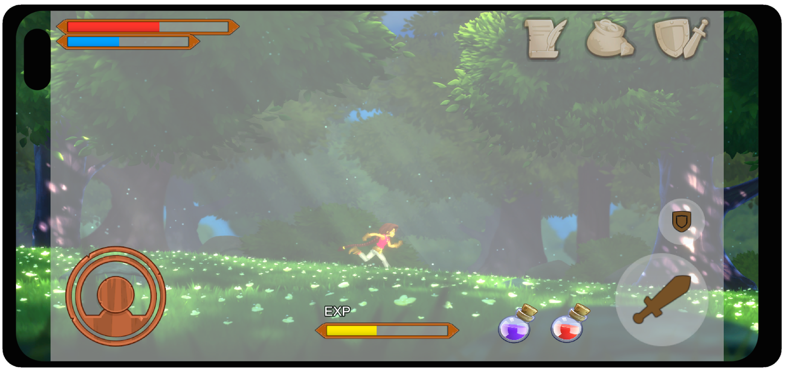

Safe Area 将 UI 元素限制在设备报告的安全区域（Screen.safeArea）内，适用于带刘海、圆角或系统手势区域的移动设备。分辨率或方向改变时，它更新所附 RectTransform 的锚点，使该 UI 及子级保持在安全区域中。
属性（Properties）
| 属性 | 功能说明 |
|---|---|
| 参考方向（Reference Orientation） | 编写 Edges 和 Alignment 方向时使用的参考方向。运行时组件会将这些方向重新映射到当前设备方向。 |
| 边缘（Edges） | 选择需要向内收缩以遵守安全区域的边缘，方向相对于 Reference Orientation 指定。 |
| 上（Top） | 向内收缩上边缘。 |
| 右（Right） | 向内收缩右边缘。 |
| 下（Bottom） | 向内收缩下边缘。 |
| 左（Left） | 向内收缩左边缘。 |
| 对齐（Alignment） | 可选地统一两侧内缩量，使剩余 UI 区域居中。方向相对于 Reference Orientation 指定。 |
| 水平居中（Center Horizontally） | 方向映射后，将左右内缩量中的较大值应用于两侧。 |
| 垂直居中（Center Vertically） | 方向映射后，将上下内缩量中的较大值应用于两侧。 |
详细说明（Details）
Safe Area 读取 Screen.safeArea，将其转换为归一化坐标，再设置：
RectTransform.anchorMinRectTransform.anchorMax
同时重置：
- 将 RectTransform.offsetMin 设为零。
- 将 RectTransform.offsetMax 设为零。
因此，锚点定义可用区域，元素拉伸以填满该区域。在 uGUI 中，相当于安全区域容器构成一个框架，所有子 UI 都在其中布局。锚点与 RectTransform 行为参阅 RectTransform。
典型配置（Typical setup）
常见做法是在 Canvas 下的顶层容器上添加 Safe Area，再把所有必须可见的 UI 放在其下：
Canvas
├─ SafeAreaRoot (RectTransform + Safe Area)
│ ├─ TopBar
│ ├─ HUD
│ └─ Buttons
└─ Background (optional, can be full-bleed)
EventSystem
该结构允许背景铺满屏幕，同时确保交互 UI 留在安全区域内。
参考方向与方向映射（Reference Orientation）
Edges 和 Alignment 标志相对于 Reference Orientation 编写。设备旋转时，组件会将选中的边缘映射到屏幕上正确的物理边缘。
例如，以 Portrait 为参考设置 Top 后再旋转到横屏，Top 会映射到对应横屏方向的边缘。这样只需编写一次安全区域意图，就能支持四种方向。
对齐（Alignment）
| 启用 Alignment |  |
| 不启用 Alignment |
当只有一侧存在较大内缩量时（如横屏时一侧有刘海），Alignment 很有用。不开启时可用 UI 区域会偏离中心；开启对应轴的对齐后，会将较大内缩量应用于两侧，以保持居中。
与其他 uGUI 组件的交互
Safe Area 驱动 RectTransform 的锚点和偏移。避免在同一 GameObject 或其父 GameObject 上添加同样驱动该 RectTransform 的组件，如 Layout Group 或 Content Size Fitter。若需要自动布局，将这些组件放在子对象上，让 Safe Area 留在独立父容器上。
有关布局组件如何驱动 RectTransform，参阅 Auto Layouts。
提示（Hints）
- 在单个根容器（如 SafeAreaRoot）上使用 Safe Area，将大部分 UI 放在其下；只有刻意铺满屏幕的背景或装饰图形放在安全区域外。
- 设备存在不对称内缩时，若 UI 在横屏中偏移，启用 Center Horizontally 和／或 Center Vertically，方向以 Reference Orientation 为准。
- Screen.safeArea、分辨率或设备方向变化时，Safe Area 会在运行时更新。在同一 RectTransform 上动画化锚点或偏移会产生冲突。